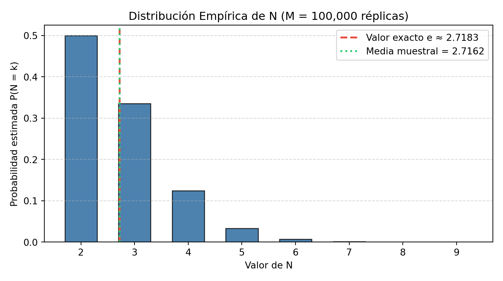

1 Problema 1
- Sea \((U_{n})_{n\in\mathbb{N}}\) una sucesión de v.a.i.i.d. a la v.a. \(\mathcal{U}\sim\mathcal{U}(0,1)\). Definimos el número de números aleatorios que deben sumarse para superar 1 como:
\[N := \min\left\{n \in \mathbb{N} : \sum_{i=1}^{n} U_{i} > 1\right\}\]
1.1 1.1. Estime \(\mathbb{E}[N]\) por la generación de \(10^2\), \(10^3\) y \(10^4\) valores de \(N\).
1.1.1 Simulación de Monte Carlo.
- Algoritmo para generar un valor de \(N\)
Para simular un valor de \(N\), seguimos el siguiente procedimiento:- Inicializar \(n = 0\) y \(S = 0\).
- Mientras \(S \le 1\):
2.1) Generar \(U \sim \mathcal{U}(0,1)\).
2.2) \(S \leftarrow S + U\).
2.3) \(n \leftarrow n + 1\).
- Devolver \(n\).
- Inicializar \(n = 0\) y \(S = 0\).
- Estimador de \(\mathbb{E}[N]\)
\[\hat{E}[N] = \frac{1}{M}\sum_{j=1}^{M}N_{j}, \qquad \text{Error estándar} = \frac{S_N}{\sqrt{M}}\]
1.1.2 Código de simulación y gráfico en Python.
import numpy as np
import matplotlib.pyplot as plt
np.random.seed(42)
def generar_N():
suma = 0.0
n = 0
while suma <= 1.0:
suma += np.random.random()
n += 1
return n
def estimar_E_N(M):
valores_N = np.array([generar_N() for _ in range(M)])
estimacion = np.mean(valores_N)
error_est = np.std(valores_N, ddof=1) / np.sqrt(M)
return estimacion, error_est, valores_N
muestras = [100, 1000, 10000]
print("Simulación para estimar E[N]")## Simulación para estimar E[N]## ------------------------------------------------------------## M Estimación Error estándar## ------------------------------------------------------------for M in muestras:
estimacion, error, _ = estimar_E_N(M)
print(f"{M:<10} {estimacion:<15.6f} {error:<15.6f}")## 100 2.730000 0.086287
## 1000 2.716000 0.027787
## 10000 2.721300 0.008747# Simulación con M = 100,000 para gráfico
M_grande = 100000
_, _, valores_final = estimar_E_N(M_grande)
# Histograma de frecuencias de N
valores_unicos, frecuencias = np.unique(valores_final, return_counts=True)
probabilidades = frecuencias / M_grande
plt.figure(figsize=(7.5, 4.2))## <Figure size 750x420 with 0 Axes>## <BarContainer object of 8 artists>plt.axvline(np.e, color="#e74c3c", linestyle="--", linewidth=2, label=f"Valor exacto e ≈ {np.e:.4f}")## <matplotlib.lines.Line2D object at 0x78961f393be0>plt.axvline(np.mean(valores_final), color="#2ecc71", linestyle=":", linewidth=2, label=f"Media muestral = {np.mean(valores_final):.4f}")## <matplotlib.lines.Line2D object at 0x78961f393a90>## Text(0.5, 1.0, 'Distribución Empírica de N (M = 100,000 réplicas)')## Text(0.5, 0, 'Valor de N')## Text(0, 0.5, 'Probabilidad estimada P(N = k)')## ([<matplotlib.axis.XTick object at 0x78961f332bc0>, <matplotlib.axis.XTick object at 0x78961f4f3e20>, <matplotlib.axis.XTick object at 0x78961f3c6140>, <matplotlib.axis.XTick object at 0x78961f3c5d20>, <matplotlib.axis.XTick object at 0x78961f3c6650>, <matplotlib.axis.XTick object at 0x78961f3c5990>, <matplotlib.axis.XTick object at 0x78961f3f41c0>, <matplotlib.axis.XTick object at 0x78961f3c43a0>], [Text(2, 0, '2'), Text(3, 0, '3'), Text(4, 0, '4'), Text(5, 0, '5'), Text(6, 0, '6'), Text(7, 0, '7'), Text(8, 0, '8'), Text(9, 0, '9')])## <matplotlib.legend.Legend object at 0x78961f3f5570>
1.2 1.2. ¿Cuál es el valor de \(\mathbb{E}[N]\)?
1.2.1 Demostración analítica.
Definimos para \(x \ge 0\):
\[N(x) := \min\left\{n \in \mathbb{N} : \sum_{i=1}^{n} U_{i} > x\right\} \quad \text{y} \quad m(x) := \mathbb{E}[N(x)]\]
Claramente, \(\mathbb{E}[N] = m(1)\). Condicionando sobre \(U_{1}\):
\[m(x) = \mathbb{E}[\mathbb{E}[N(x) \mid U_{1}]] = 1 + \int_{0}^{x} m(x - u)\,du, \quad 0 \le x \le 1\]
Haciendo el cambio de variable \(v = x - u\):
\[m(x) = 1 + \int_{0}^{x} m(v)\,dv \implies m'(x) = m(x) \implies m(x) = C_{1}e^{x}\]
Como \(m(0) = 1\) entonces \(C_{1} = 1\). Por lo tanto:
\[m(x) = e^{x}, \quad 0 \le x \le 1\]
Evaluando en \(x = 1\), concluimos \(\mathbb{E}[N] = e \approx 2.718281828\).